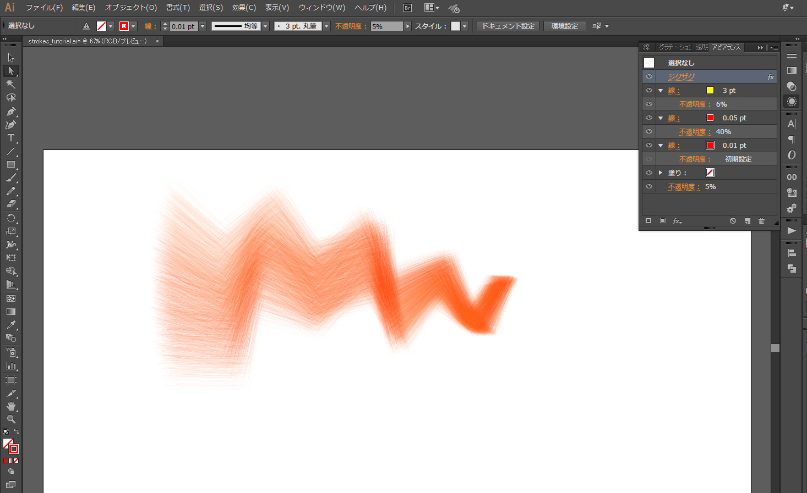
今回は Illustrator で
こんな感じの絵を描いて
遊ぶ方法を紹介します。
こんな感じの絵を描いて
遊ぶ方法を紹介します。
『間違った』線
マット・ピアソンの本『ジェネラティブ・アート
-Processingによる実践ガイド』に
「『間違った』線の引き方」という
レッスンがあります。
 | [普及版]ジェネラティブ・アート―Processingによる実践ガイド 新品価格 |
Processing では
単にまっすぐ線を引くには
line() 関数を呼ぶだけで
いいのですが、
「『間違った』線の引き方」では
少しずつランダムに
座標をずらしながら
大量の短い線を引く事で、
うねうねした
手書き風の線を引きます。
このように引いた線は
手作業で引いた線のような
アナログテイストを持ちます。
単にまっすぐ線を引くには
line() 関数を呼ぶだけで
いいのですが、
「『間違った』線の引き方」では
少しずつランダムに
座標をずらしながら
大量の短い線を引く事で、
うねうねした
手書き風の線を引きます。
このように引いた線は
手作業で引いた線のような
アナログテイストを持ちます。
Processing による『間違った』線
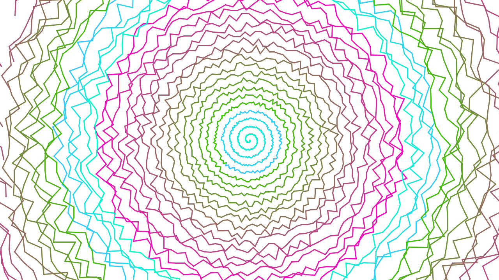
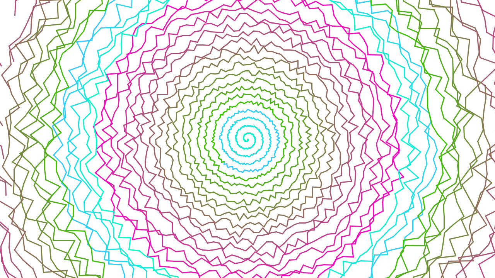
アートアニメーション界隈では、
手作業で作ることによって
どうしても生じる不正確さから来る
線や動きのぶれの面白さについて
よく語られます。
手作業で作ることによって
どうしても生じる不正確さから来る
線や動きのぶれの面白さについて
よく語られます。
一つ例を引くと、
Filmbilder の作品は
いかにもアナログな
情報量の多い画ではなく、
ベクターグラフィックの
ようでもある
ベタ塗りです。
それでもよく見ると、
あまり機械的に『正しい』
線は引いておらず、
モーションと相まって
絶妙なアナログ感が
付加されています。
Filmbilder の作品は
いかにもアナログな
情報量の多い画ではなく、
ベクターグラフィックの
ようでもある
ベタ塗りです。
それでもよく見ると、
あまり機械的に『正しい』
線は引いておらず、
モーションと相まって
絶妙なアナログ感が
付加されています。
Filmbilder "Nuggets"
敢えて正確であり
敢えて不正確でもある線
ところで、今 CG アニメーション作品を
一つ企画しています。
CG としてやることは
ちゃんとやりつつ、
アナログな要素を
うまい具合に
取り込んでいるような
ものにしたくて、
そのバランスの
ちょうどいいラインを
探っています。
目下制作中の
キーワードミキサーの
プロモーションビデオや、
なんとなく息抜きに
描き始めてしまった
Web コミックにも
反映できれば、
というのもあって
研究の日々です。
ピアソンは
正確さがウリである機械に、
元来は不正確さから生じるはずの
ランダムな要素を持った線を
敢えて描かせて、
『間違った』線と
称しているわけですが、
こうした線は明らかに
どこか『正しい』線の名残も
持っているように見えます。
そのあたりの
どちらともつかなさ具合に
今、非常に興味があります。
正確さがウリである機械に、
元来は不正確さから生じるはずの
ランダムな要素を持った線を
敢えて描かせて、
『間違った』線と
称しているわけですが、
こうした線は明らかに
どこか『正しい』線の名残も
持っているように見えます。
そのあたりの
どちらともつかなさ具合に
今、非常に興味があります。
Processing による細い線の重ね描きによる手描き風の塗り
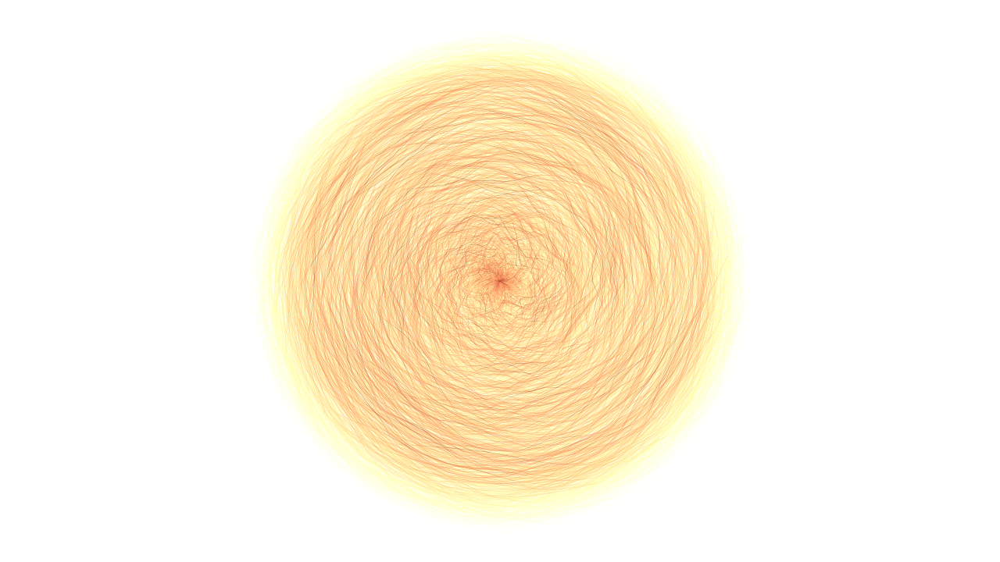
Processing での遊びで
とりわけ
私の興味を引くのは、
上図のように
細い線を大量に
重ね描きするとできる
手描き風の塗りです。
このあたりに
潜んでいそうな何かを
ウォッフォンモッフォン
してみたい！
と思って、
Illustrator などを
いじってみますと
これがなかなか楽しい。
というわけで、
今回はその遊び方を
紹介します。
(プログラムでの
生成に興味がある方には
上述の本がお薦めです。)
とりわけ
私の興味を引くのは、
上図のように
細い線を大量に
重ね描きするとできる
手描き風の塗りです。
このあたりに
潜んでいそうな何かを
ウォッフォンモッフォン
してみたい！
と思って、
Illustrator などを
いじってみますと
これがなかなか楽しい。
というわけで、
今回はその遊び方を
紹介します。
(プログラムでの
生成に興味がある方には
上述の本がお薦めです。)
注意:この遊びは
大量の線を
描画して
マシンリソースを
乱費するので、
マシンが不安定になる
可能性があります。
大量の線を
描画して
マシンリソースを
乱費するので、
マシンが不安定になる
可能性があります。
Illustrator による
やや手描き風
ウォッフォンモッフォン
ストロークの描き方
まずペンツールか何かで適当な線を引きます。
線の細さは極細
(0.01 pt とか)、
にしておきます。
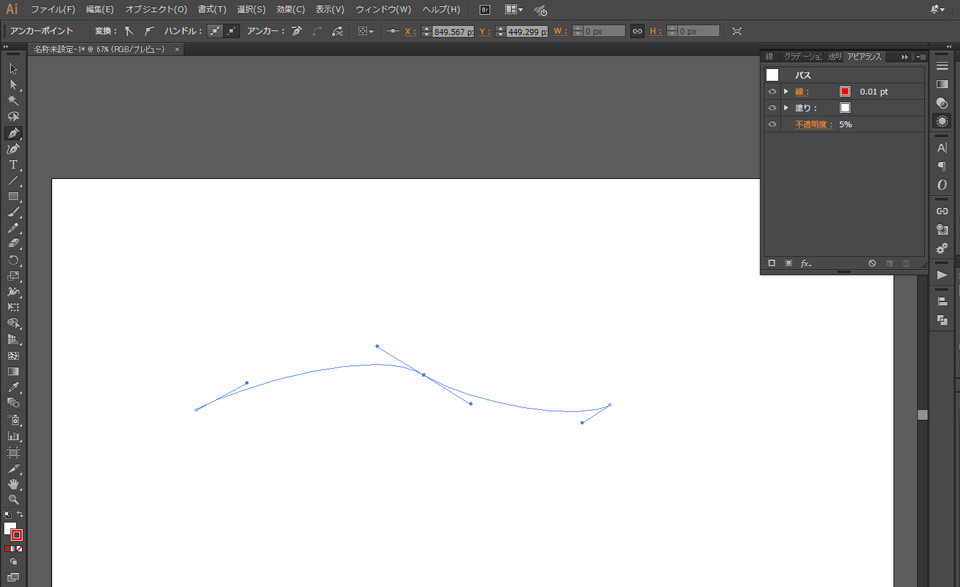
ここから
どんどん処理が
重くなっていきますので
注意しましょう。
選択ツール
(ショートカットは V)で
線を選択したら、
Alt + 上矢印キーを
数秒間押しっぱなしにします。
これで線が大量に
複製されます。
ここでどれくらい複製するかで、
テイストが変わってきます。
たくさん複製したほうが
面白いのですが、
やり過ぎると
Illustrator が死にます。
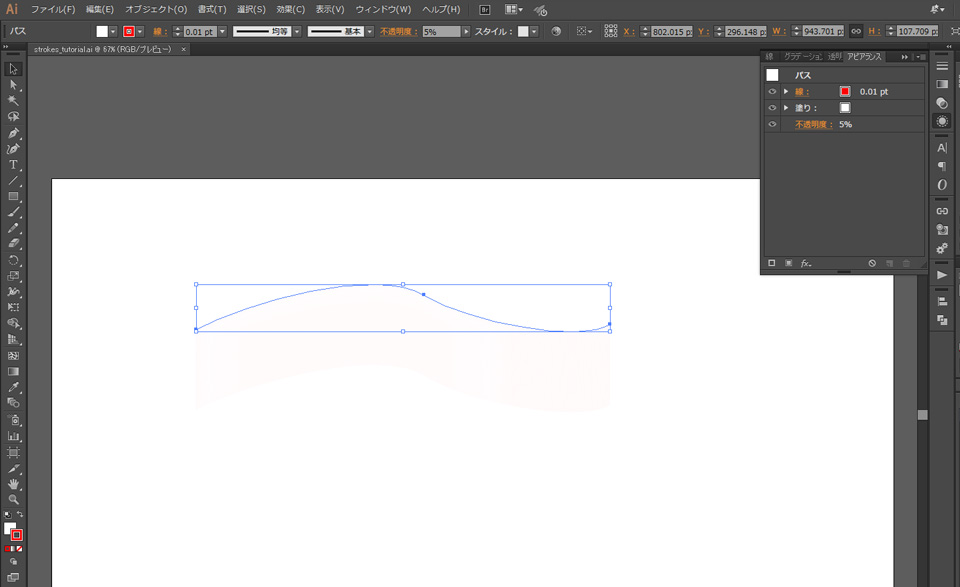
どんどん処理が
重くなっていきますので
注意しましょう。
選択ツール
(ショートカットは V)で
線を選択したら、
Alt + 上矢印キーを
数秒間押しっぱなしにします。
これで線が大量に
複製されます。
ここでどれくらい複製するかで、
テイストが変わってきます。
たくさん複製したほうが
面白いのですが、
やり過ぎると
Illustrator が死にます。
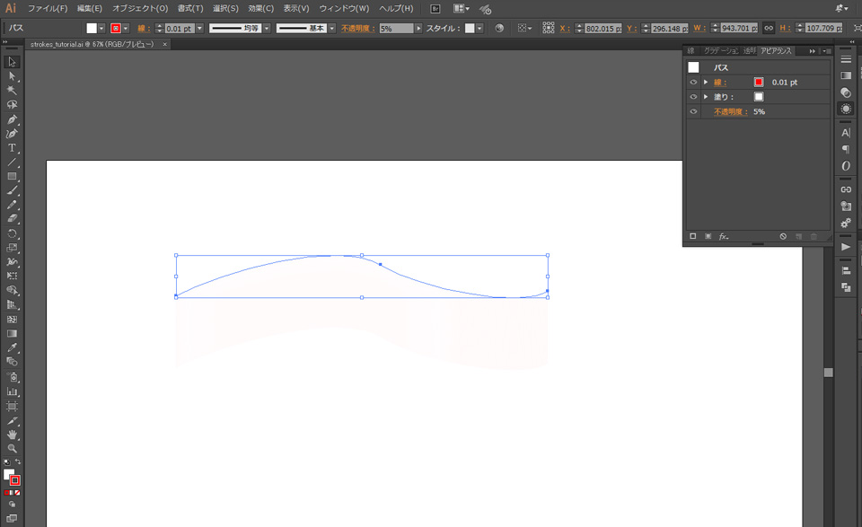
複製された線を
Ctrl+A で全選択したら、
アピアランスパネルで
線のプロパティを調整して
好みの感じにしていきます。
今回は
極細で不透明度が高めの線と
太くて不透明度が低い線を
組み合わせています。
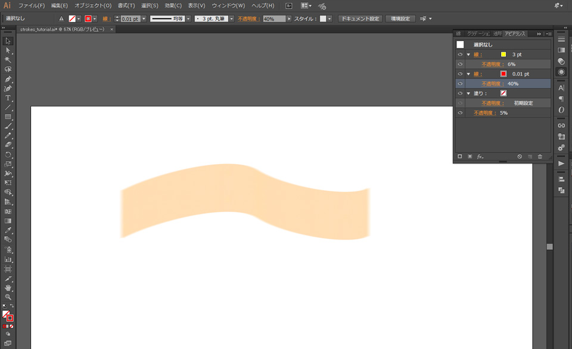
Ctrl+A で全選択したら、
アピアランスパネルで
線のプロパティを調整して
好みの感じにしていきます。
今回は
極細で不透明度が高めの線と
太くて不透明度が低い線を
組み合わせています。
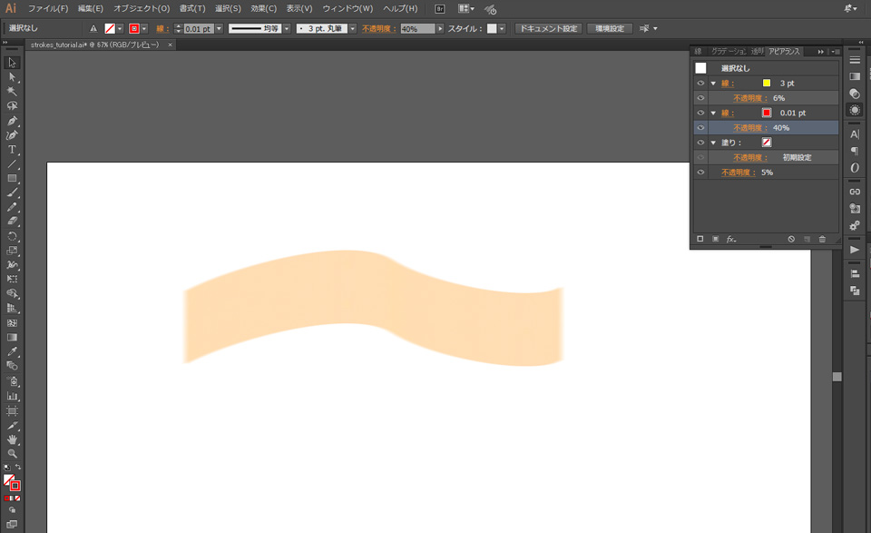
ランダムな要素を加えます。
Ctrl+A で全選択したら、
オブジェクト→個別に変形
を選択します。

Ctrl+A で全選択したら、
オブジェクト→個別に変形
を選択します。
「ランダム」にチェックを入れます。
「ランダム」がオンだと、
設定したパラメータの範囲内で
各オブジェクトが
ランダムに変形します。
色々なパラメータを試すと
面白いです。
今回は位置の移動と
回転を設定していますが、
拡大・縮小させたり、
回転の基準点を
中心以外にしてみると
また違った感じになります。
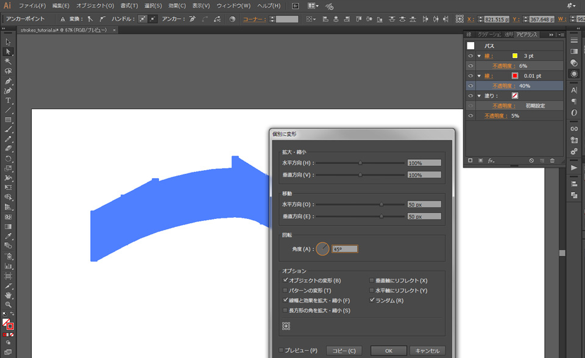
「ランダム」がオンだと、
設定したパラメータの範囲内で
各オブジェクトが
ランダムに変形します。
色々なパラメータを試すと
面白いです。
今回は位置の移動と
回転を設定していますが、
拡大・縮小させたり、
回転の基準点を
中心以外にしてみると
また違った感じになります。
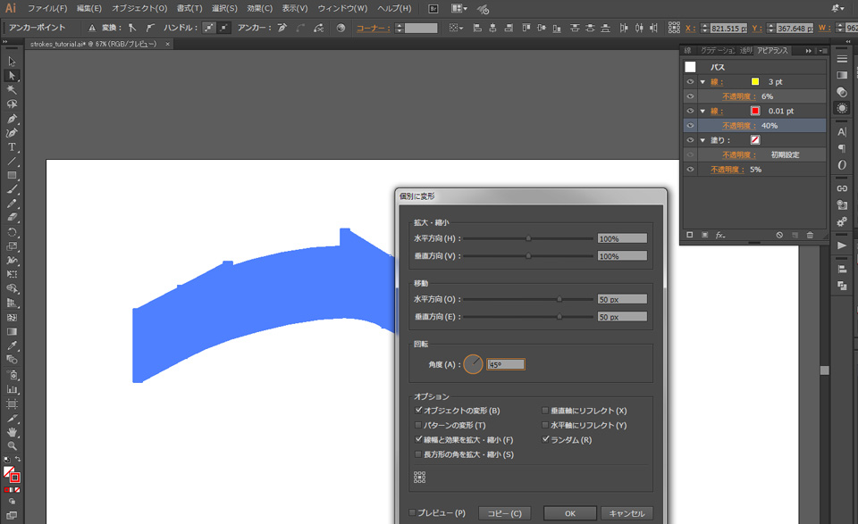
色鉛筆で描いたような感じに
近づいてきましたが、
ちょっと薄すぎます。
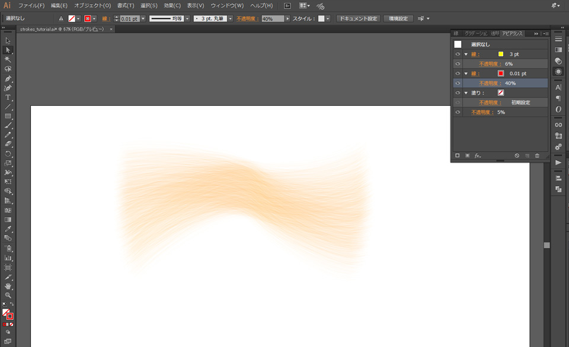
近づいてきましたが、
ちょっと薄すぎます。
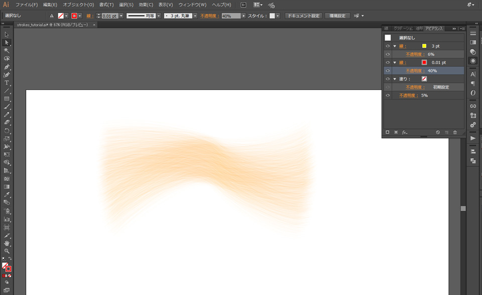
アピアランスを調整します。
0.05 ポイントの線を
間に追加しました。
線に変更を加える前には、
全選択するのを
忘れないようにしましょう。
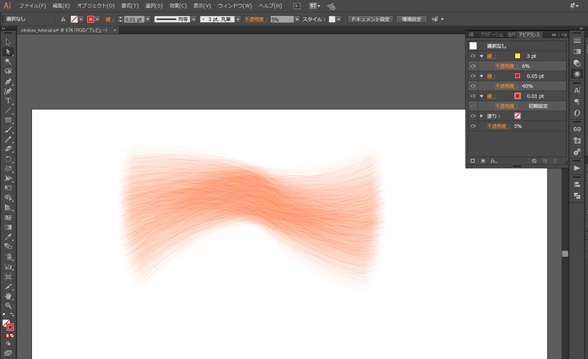
0.05 ポイントの線を
間に追加しました。
線に変更を加える前には、
全選択するのを
忘れないようにしましょう。
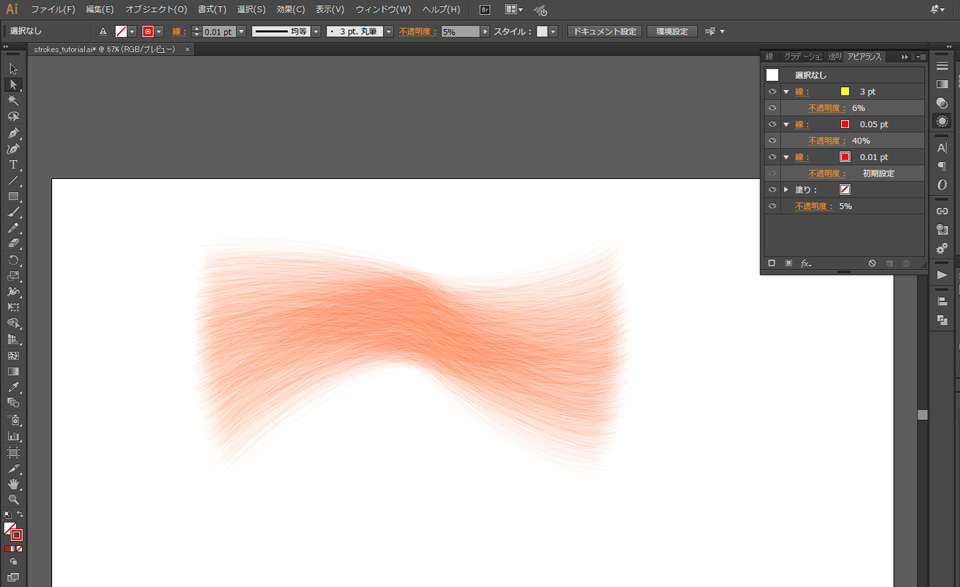
線が一点に
収束するようにしてみます。
ダイレクト選択ツール
(ショートカットは A)で
右端の方にある
アンカーポイントを
まとめて選択します。
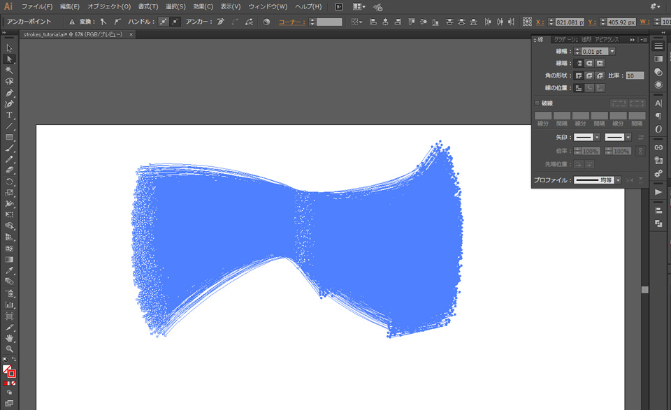
収束するようにしてみます。
ダイレクト選択ツール
(ショートカットは A)で
右端の方にある
アンカーポイントを
まとめて選択します。
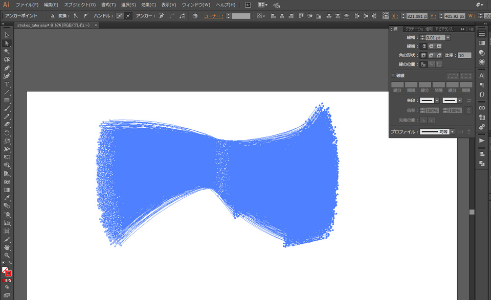
オブジェクト→パス→平均
(ショートカットは Alt+Ctrl+J)
でアンカーポイントの位置を
一点に集中させます。
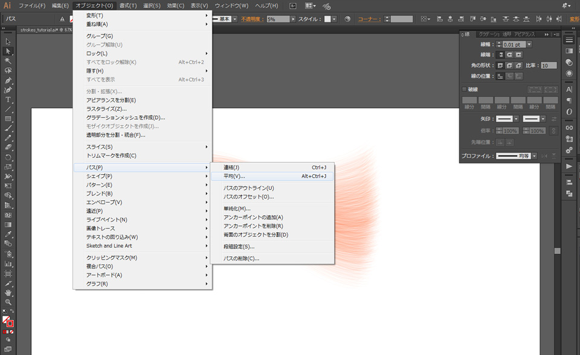
(ショートカットは Alt+Ctrl+J)
でアンカーポイントの位置を
一点に集中させます。
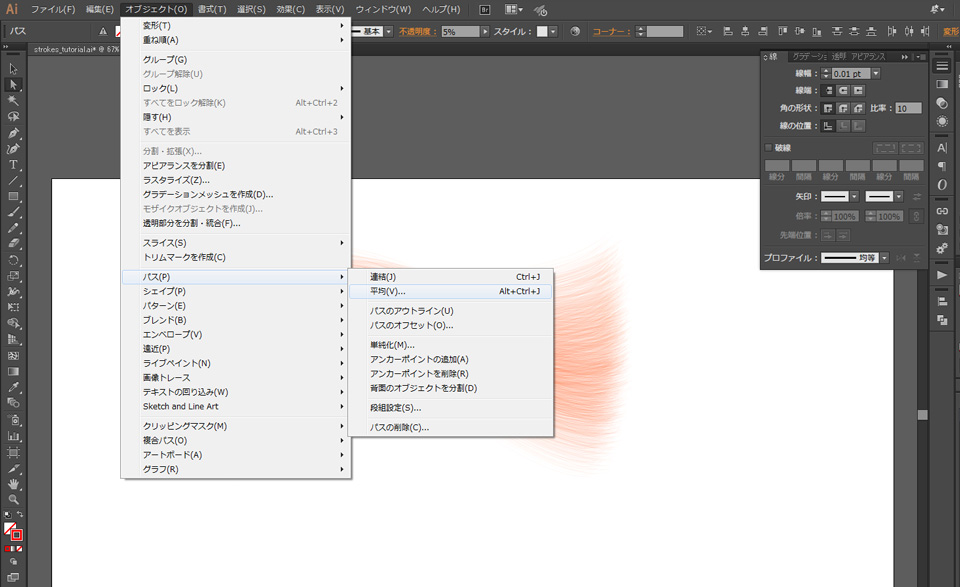
いい感じになりました。

フィルタなど掛けてみると
面白いです(糞重いですが)。
効果→パスの変形→ジグザグ
を使ってみます。
面白いです(糞重いですが)。
効果→パスの変形→ジグザグ
を使ってみます。
Processing も面白いのですが、
Illustrator でやると
「個別に変形」や「パスの変形」
などのイラレならではの
面白ツールが使えるので、
これはこれで
遊びの幅が広がります。
矢印、破線、パスファインダー
なんかも使えるかもしれません。
以下、作例です。
Illustrator でやると
「個別に変形」や「パスの変形」
などのイラレならではの
面白ツールが使えるので、
これはこれで
遊びの幅が広がります。
矢印、破線、パスファインダー
なんかも使えるかもしれません。
以下、作例です。
手描き風のタッチ
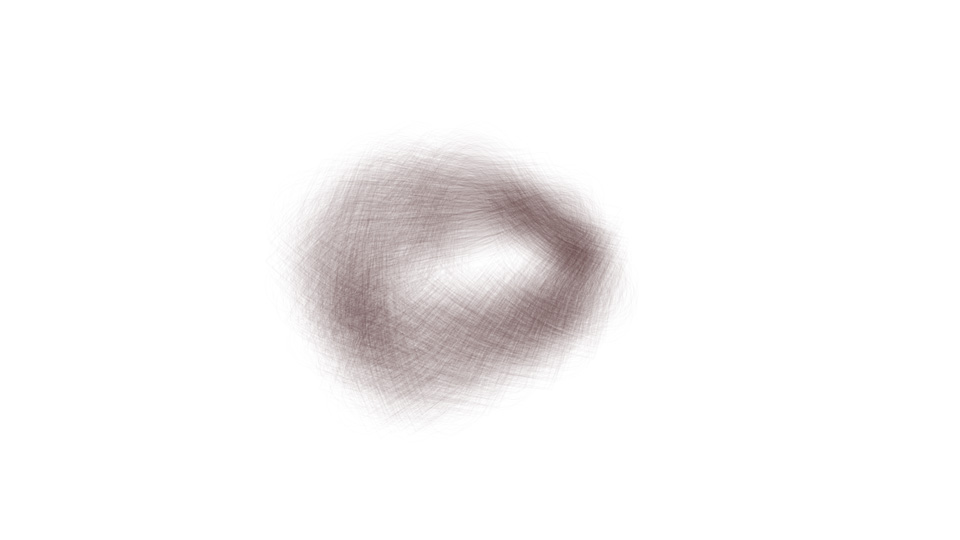
手描き風のストローク
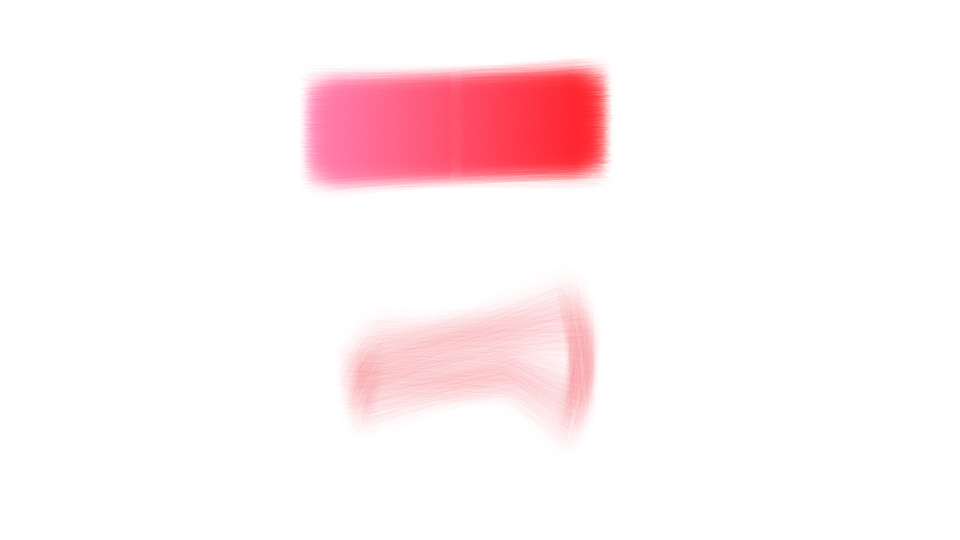
少し具体的にしてみる
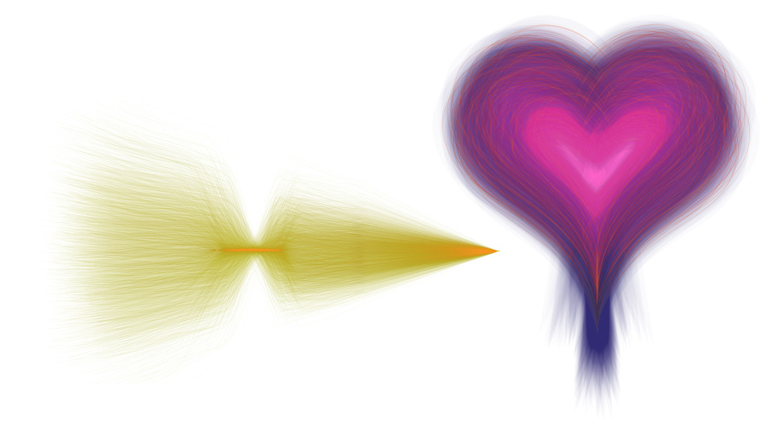
スパイラルのウォッフォンモッフォン

グリッドと矢印のウォッフォンモッフォン
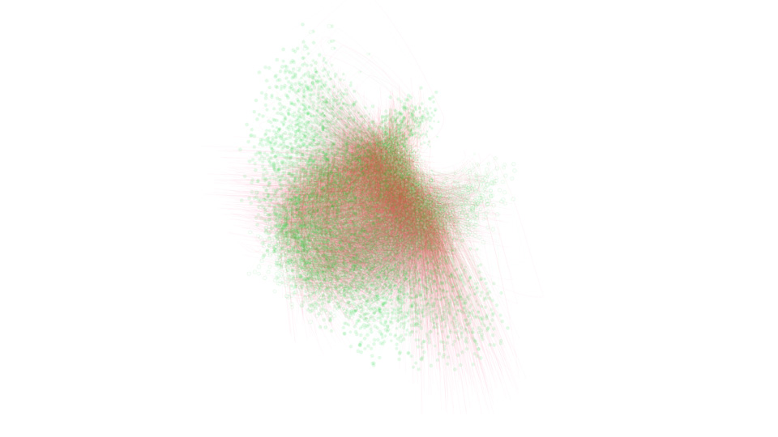